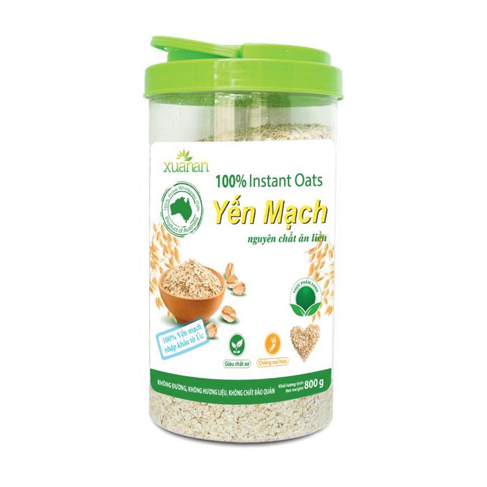
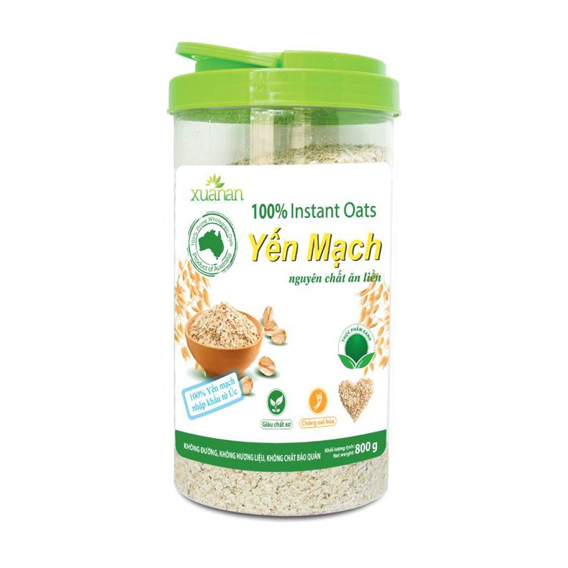

Sản phẩm bán chạy



Sản phẩm bán chạy

Thông tin về cây yến mạch
Yến mạch là thực phẩm có nguồn gốc từ thực vật. Yến mạch gồm có hạt yến mạch (thường được sử dụng làm thực phẩm), lá và thân (rơm yến mạch) và cám (lớp vỏ ngoài của hạt yến mạch). Lá, thân và cám yến mạch thường được sử dụng làm thuốc. Cám yến mạch và yến mạch nguyên chất được sử dụng cho những người có huyết áp cao, cholesterol cao, bệnh nhân đái tháo đường, hay các bệnh nhân có về đề tiêu hoá chẳng hạn như: hội chứng ruột kích thích, bệnh chi nang ruột non, bệnh viêm ruột, tiêu chảy và táo bón. Ngoài ra, chúng còn được sử dụng để ngăn ngừa các bệnh như: bệnh tim, sỏi mật, ung thư kết tràng (ung thư đại tràng) và ung thư dạ dày.